수정 적용 결과 16건
2026-11-27 · 커밋은 하지 않았습니다(작업 트리에만 반영). 이미지를 누르면 원본이 열립니다.
결정사항 반영 요약
| # | 결정 | 반영 |
|---|---|---|
| 1 | 조조군은 이벤트 진입 없이 총공세(assault) AI로 문을 통해 진입 | 반영. 단 AI가 남서문으로 들어가는 것은 아직 확인 못 함(아래 1번) |
| 4 | 명조 유지, 막음·EXP·HP 등도 이미지로 | 에셋 미생성(이미지 생성 한도). 글자 집합·helper까지만 |
| 6 | 아이콘도 글씨와 함께 눌렀을 때 선택범위가 칠해짐 | 반영(호버 기준, 터치는 미구현) |
| 9 | 엔진 수정 | 반영 + 테스트. 데이터 91곳도 정리 |
| 11 | 기존 연녹 테두리 재사용 | 반영 |
| 12 | 관평 특성 A/B 설명 요청 | 선택 대기(아래) |
| 13 | 맵의 단을 옮김 | 반영 + 좌석 테스트 |
| 14 | 안 B | 반영 |
| 15 | 제갈량은 줄거리상 필요하면 유지, 시민 구성은 봐야 함 | 제갈량 유지(27v). 시민 구성은 아래 표로 검토 요청 |
| 16 | (b) 나룻배 출구로 직접 찾아감 | 반영 |
① 관평 특성 — A 기습(이동한 칸×명중률 +3%p) · 추살(병력 절반 이하 대상 반드시 치명타) · 원시(원거리 사거리 +2) / B 십자사격(선택한 적과 상하좌우 적을 쏘는 병법) · 기습 · 결사(병력 절반 이하면 주는 피해 +50%). 현재는 옛 특성(기습·결사·추살) 그대로이고 테스트상 문제는 없음.
② 4번 글자 이미지: codex 이미지 생성이 11월 29일 10:49 이후에야 풀립니다. (a) 그때까지 기다림(추천) (b) 다른 생성 수단을 지정 — 폰트를 이미지로 굽는 방식은 쓰지 않습니다.
③ 15번 시민 대사 검토(아래 표).
1. 하비 전투 반영AI 진입 미확인
- 북서·남동문 개방과 앞뒤 wait 삭제(남서문만 열림). 조조군 이동 컷신 삭제 — 조인 "유비군을 구해라!", 하후연 "우리도 들어가자!"로 끝남. 여포 문 견제 보병 8기는 SW를 바라봄. 조조군은
assault유지. fullstory 갱신. - 난이도
_balance(10시드): 전 승리 0/10·평균 2.5라운드 → 후 0/10·2.1라운드. 승률은 원래부터 0이라 이번 수정과 무관. - 캡처로 조조군이 성 밖 줄에 선 것만 확인했고, 닫혔던 문 대신 열린 남서문으로 길을 찾아 들어오는지·첫 턴에 유비를 밀어내지 않는지는 검증하지 못했습니다. 승낙하시면 이어서 확인합니다.


2. 아군 클릭 시 공격 범위 반영
이동 단계·메뉴 단계에서 지금 자리(이동 후엔 새 자리)에서 닿는 칸을 붉은 외곽선으로 표시. 파랑=이동 칸. 테스트 TestRangeBorderDuringOrder 통과.


3. 17장 관우·장비 반영
관우 [3,5], 장비 [2,5]. 확대해서 반투명이 사라진 것을 확인.


4. 붓글씨 글자 이미지 미완
이미지 생성 한도로 글리프 에셋이 없어 화면은 그대로입니다. 끝낸 것: 글자 집합 확정, 그리기 helper glyph.go와 테스트.
| 구분 | 글자 |
|---|---|
| 숫자·기호·영문(20) | 0~9 · + - % ! : · E X P M H |
| 한글(54) | 제 턴 치 명 막 음 상 태 회 복 학 습 이 동 력 + 상태 라벨 38자(감 거 격 경 계 고 공 교 기 독 란 략 러 리 물 박 반 발 방 보 봉 사 소 속 수 순 신 약 어 정 중 찔 책 팔 피 필 해 혼 화) |
| 폰트 유지 | 스킬 이름(79개)·특성 이름(210개)은 가변 데이터라 기존 폰트(원하면 2차로 이미지화, 시트 약 6장 추가) |
주의: TestGlyphAtlasCoversScreenText는 에셋이 없어 지금 실패합니다. 에셋이 생기면 통과하도록 만든 테스트이고 이번 작업과 별개로 트리에 실패가 하나 남아 있습니다. 원하시면 에셋 전까지 skip 처리하겠습니다.
5. 방천화극 반영
퇴각 연쇄 추가 공격 계수 1.0→0.5(첫 일반 공격 100%). 설명문·문서 갱신. TestRetreatSweepCoefficient: 계수 1일 때 대비 0.5일 때 추가 공격 피해가 절반(±10%) 통과. core 패키지 전체 통과(84.9s).
6. 병법 행 선택 범위 반영터치 미구현
병법 행(아이콘·글씨 같은 영역)에 호버하면 그 병법의 선택 범위를 옅은 적색으로 칠함. 자기 대상은 자기 칸. MP 모자란(회색) 행은 칠하지 않음. 터치 입력 경로는 따로 만들지 않았습니다. 낙석·탁류 두 병법으로 확인.


7. 심공 회복 표시 반영
회복 이벤트(heal)를 내도록 수정, 반격 타이밍 분리. 피해 22 → 초록 "+2". 풀 HP면 표시 없음, 최대 HP 상한 적용(테스트).
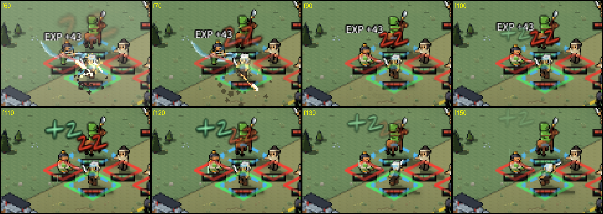
8. 돌파-반격 순서 반영
반격자의 밀침이 반격 스윙 뒤에 재생. 전: 반격 전(f130)에 이미 밀려남 → 후: 반격 스윙(f140) 뒤 f150~170에 밀림.


9. 퇴장 규칙 반영전령 재현 안 됨
- 엔진:
Exit뒤 맵 정면(SE·SW) 가장자리까지 경로를 찾아 걸어 나감. 퇴장 303건 중 141건을 엔진이 보정. 뒤쪽 바깥으로 가던 데이터 91곳 정리. 테스트TestSceneExitsWalkToFrontEdge통과. - 번아의 실제 원인은 백스텝이 아니라 마지막 걸음이 NE라 맵 한가운데서 등을 보이며 사라진 것. 이제 SW(정면)로 걸어 나감.
- 여남군청 전령(관도대전 보고)은 수정 전에도 규칙을 만족해 전후 화면이 같습니다. 보신 백스텝이 다른 장면일 수 있어 장면을 알려 주시면 확인하겠습니다.
- 강하 회의(c22)의 관우·고순 퇴장은 맵 동쪽 길로 나가도록 고쳤습니다(북쪽 나루는 정면 경로가 없음).
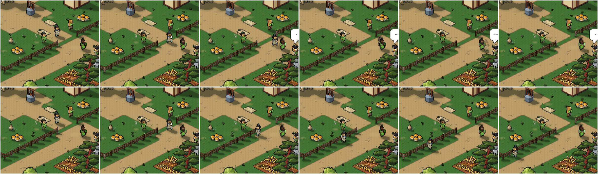
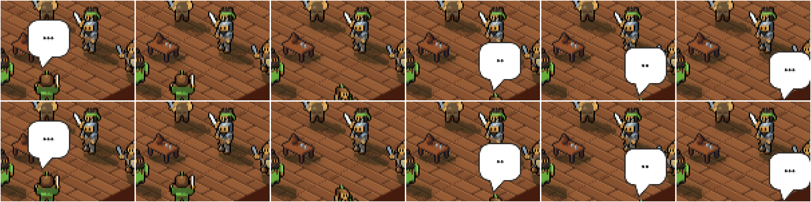
10. 19장 업 말풍선 반영
이름 길이 대신 해시로 시작·간격을 정하고, 다른 풍선과 겹치면 0.3초씩 미룸. 해시만으론 11개 지역에서 겹침이 남아 겹침 회피를 더함. 테스트 TestExploreChatterBubblesDoNotOverlap: 수정 전 11곳 실패(기록: 10-chatter-test-before-fail.txt) → 후 통과.


11. 도구점 능력치 상승 아군 반영
구매 탭에서 장비를 고르면 "사면 오르는 동료" 줄에 연녹 테두리 초상과 이유(순발 +11). 없으면 문구 표시. 표 영역이 줄 높이(68px)만큼 줄어듭니다(선택 안 했을 때도 자리 유지).


12. 여남전투 반영관평 특성 대기
- 장비 (18,21)·공도 (16,21)로 내리고, 하후연(궁기병 명시)과 기병이 북쪽 통로에서 달려와 일기토 시작. 합 수 불변.
- 진도: 인물·스토리·NPC·장면·테스트·문서에서 삭제(초상 파일은 유지). 출전 명단에서도 빠짐.
- 관평: 궁기병·단궁으로 변경(특성은 선택 대기). 진진 지력 75. 허저 민첩·운 95.
- 장합 일기토는 여남(B21)에 없고 19장 연주 전투에 있어서 그쪽에 경기병 모습을 지정했습니다. 해석이 맞는지 확인 부탁드립니다.
- B21 난이도는 전후 모두 승리 0/10(원래부터 0). 허저가 나오는 다른 판: stage18, stage25.


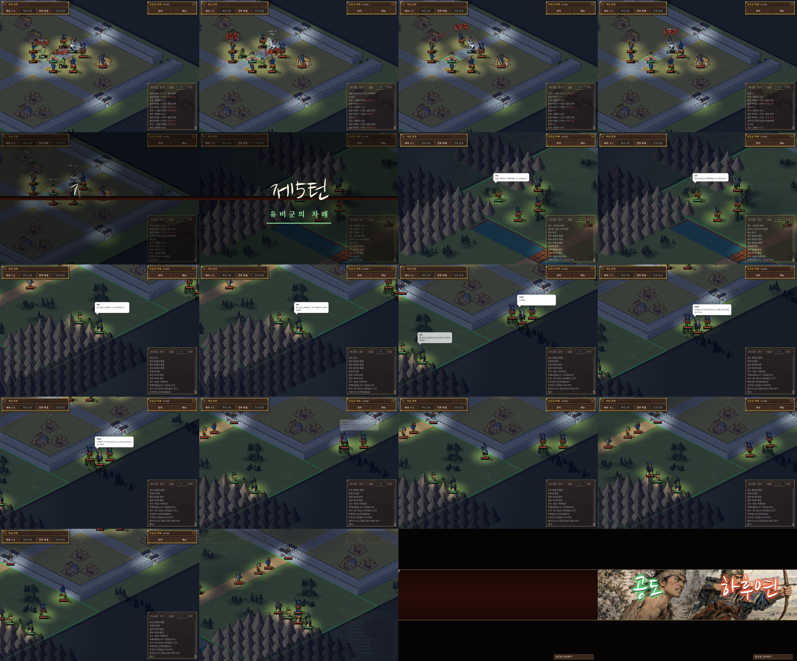
13. 양양 의자(좌석) 반영
S_council·S_mansion의 단을 앉는 칸 중앙으로 옮김(12개 장면 일괄). 도겸·유비·유기Pose: sit추가.- 테스트
scene_seats_test.go: 수정 전 위반 17건 → 0건. 빈 좌석 16곳은 로그만.

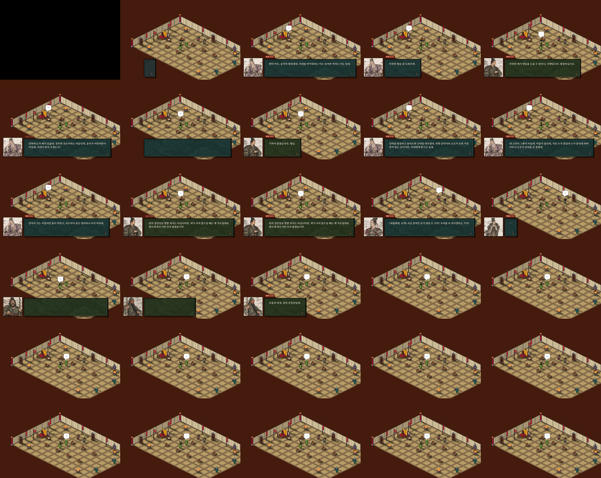

14. 유표 후사 대화(안 B) 반영
story22·장면·fullstory 반영, 장비·관우 반응 노드 2개 추가. 이음매로 s207에 "그건 그렇고," 추가, 채모의 속내 줄은 삭제. 장비 줄은 새로 씀: "저 양반들 속닥거리는 게 영 수상쩍구먼유……".
참고: 앞 장면(관청 논쟁)은 유비 수용 문제였고 후사 이야기는 없어서 "아까 관청이 소란스러웠지"는 약간 비약입니다. 확정안이라 그대로 두었습니다.
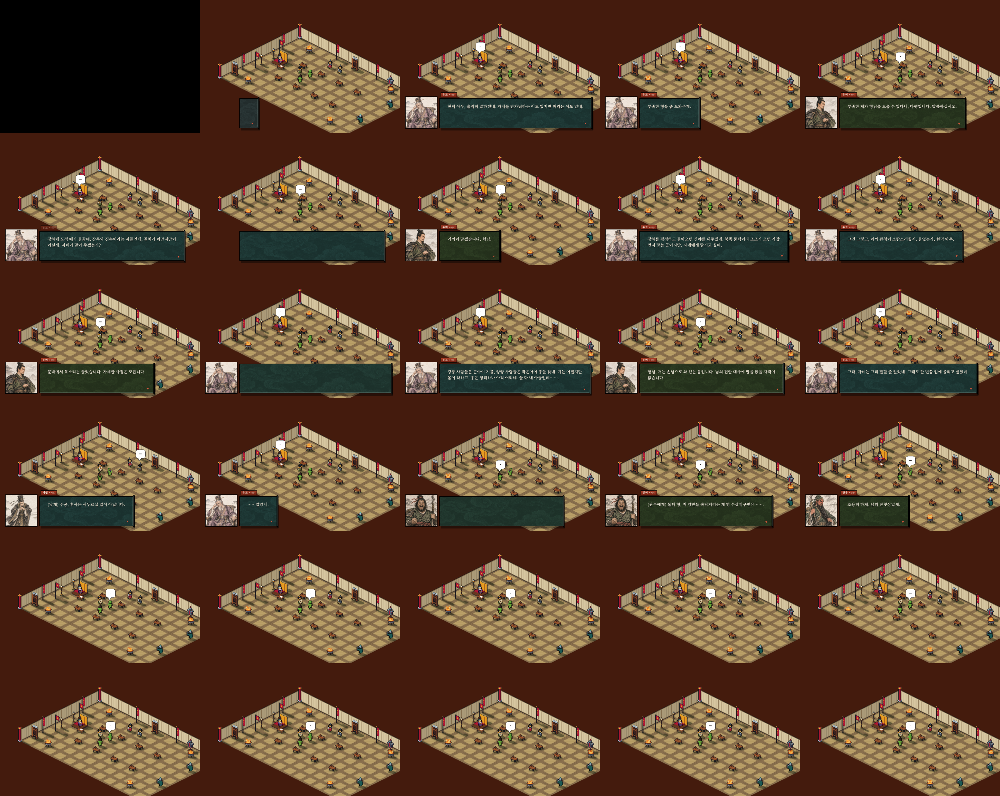
15. 양양성 맵·NPC 반영시민 검토
- 관청 (24,13)·저택 (35,13)를 북쪽 중앙 길 끝으로, 민가 9채 추가, 남쪽 성벽에 붙은 집 4채 삭제. 성벽 근접 규칙을
scenemap.Check에 추가(양양 위반 4→0). - 미축 삭제(22·23·25·27v). 제갈량은 유지. 새 시민 NPC가 5개 장면에 대사를 달리하며 등장.
- 새 규칙이 다른 맵 7곳에서도 걸립니다(S_xiapi 4건, S_xinye 5건, S_jiangling 2건, S_xudu 2건, S_checkpoint(2) 망루, S_ye 1건). 허용 이유는 두지 않았고 고치지 않았습니다. 집이 성벽에 붙은 곳은 양양과 같은 문제로 보이니 고칠지 정해 주세요.
go test ./internal/scenemap는 이 규칙 때문에 해당 맵 검사에서 걸리는지 확인이 필요합니다(양양 자체는 통과). - 새 건물 입구 출구는 테스트(
TestExploreExitPlatesOnBuildings)로만 확인했고 화면에서 열어 보지는 않았습니다.


시민 NPC 시안 (검토 요청)
| 사람 | 위치 | 22장 | 23장 | 24장 | 25장 | 27v |
|---|---|---|---|---|---|---|
| 짐꾼 | (30,21) | 북쪽에서 손님이 오셨다고 관청 앞에 짐수레가 줄을 섰소. 오늘은 품삯이 괜찮겠구먼. | 강하 뱃길이 열렸다니 쌀섬이 또 밀려오겠소. | 연회에 올릴 고기와 술동이를 관청까지 날랐소. | 저택으로 약재 짐이 연달아 들어가오. 좋은 일은 아닌 듯하오. | 조조 군이 내려온다 해서 피난 짐을 지고 사흘을 걸었소. |
| 소금 장수 | (42,22) | 도적이 길을 막아 소금값이 올랐소. | 뱃길이 열렸으니 소금값이 내리겠소. | 조인이 물러가니 소금 배가 눈치만 봅디다. | 형주목 병세 소문에 소금 사재기가 시작됐소. | 소금 배는 이제 누구에게 세를 내야 하는지 모르겠소. |
| 빨래하는 아낙#1 | (12,12) | 손님이 왔다던데 / 물이 맑아 빨래가 잘 되네 | 강하 도적이 잡혔다지 | 관청 잔치에 쓸 천이라네 | 형주목께서 편찮으시대 | 이제 마음 놓고 빨래하네 |
| 아이#1·#2 | (16,19),(21,19) | 북쪽 손님이 왔대 / 수염 긴 아저씨 봤어? | 도적이 잡혔대 / 난 장수가 될 거야 | 잔치다 잔치 / 나도 한 점 얻어먹을까 | 칼 찬 아저씨가 많아 / 쉿, 조용히 해 | 조조 군사 갔대 / 큰 배가 들어왔어 |
| 대장장이 | (12,29) | 군사가 늘면 대장간도 바빠지는 법이오. | 도적들이 버린 칼은 녹이 슬어 쓸 게 없소. | 화살촉 이천 개를 사흘에 만들었소. | 채 장군 쪽에서 창과 칼을 곱절로 주문했소. | 두고 간 갑옷과 창을 녹여 농기구를 만들라 하시오. |
| 젊은 선비 | (20,27) | 선비들이 강릉 쪽과 양양 쪽으로 갈려 서로 못마땅해한다오. | 강하가 평정되니 강릉은 남쪽 땅부터, 양양은 북쪽 방비가 먼저라 하오. | 조인을 물리치고 나니 강릉은 몸을 사리자 하오. | 강릉 쪽은 큰 공자를, 양양 쪽은 채씨 쪽을 바라본다오. | 조조가 남하할 때 강릉은 항복을, 양양은 싸우자 했다지요. |
| 주점 심부름꾼#1 | (30,29) | 술 두 동이 더! | 강하 소식 들었어? | 연회 술이 모자라네 | 오늘은 손님이 뜸하네 | 주점 문을 다시 열었소 |
| 의원 | 25장만 | 기존 대사 유지, 저택 곁으로 이동 | ||||
일부 대사는 표에서 줄였습니다. 전체 문구는 explore22~27v_xiangyang 파일에 있습니다. 27v는 파일의 실제 시점(조인이 물러간 뒤)에 맞췄습니다.
16. 강하 진지 반영
- 새 맵
S_jiangxia_camp(64×52): 북쪽 본진, 강(8칸 폭), 북·남 나루와 배, 남쪽 별동대 진지. 기존S_luzhi_camp와 다른 장 맵은 그대로. - (b)안: 북쪽 나루 "나룻배"가 남쪽 구역으로, 남쪽 나루 "나룻배"가 본진으로 연결. 남쪽에 관우·고순. 회의 뒤 새 대사 두 줄(관우 "형님, 별동대는 채비를 마쳤습니다. 강 건너에서 신호만 기다리겠습니다." / 고순 "배는 세 번이면 군사가 다 건너오. 별동대는 날이 밝는 대로 움직이겠소.").
- 회의 장면에서 관우·고순은 나루에서 걸어 들어오고, 퇴장은 동쪽 길(위 9번 규칙).
- 남쪽→북쪽 나룻배는 화면 확인 못 함(테스트만). 북쪽에서는 강 건너 관우·고순이 보이지 않음(구역별로 사람을 그림). 나룻배 그림은
boat_u를 나루 사이에 놓은 것이라 다리처럼도 보임. 갈대 소품이 없어 밭·덤불로 대신함.
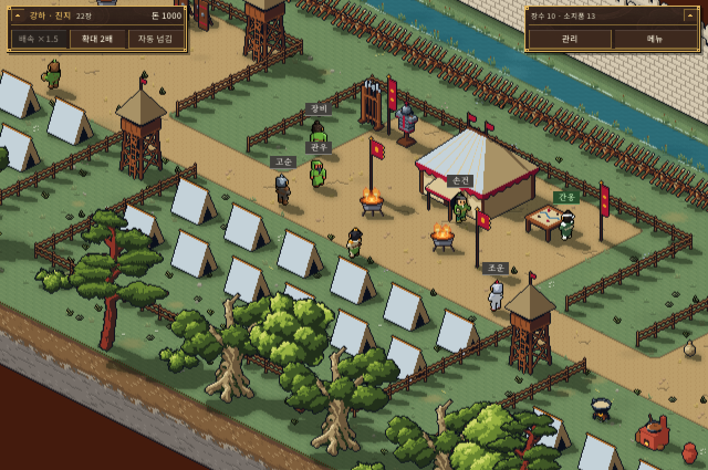
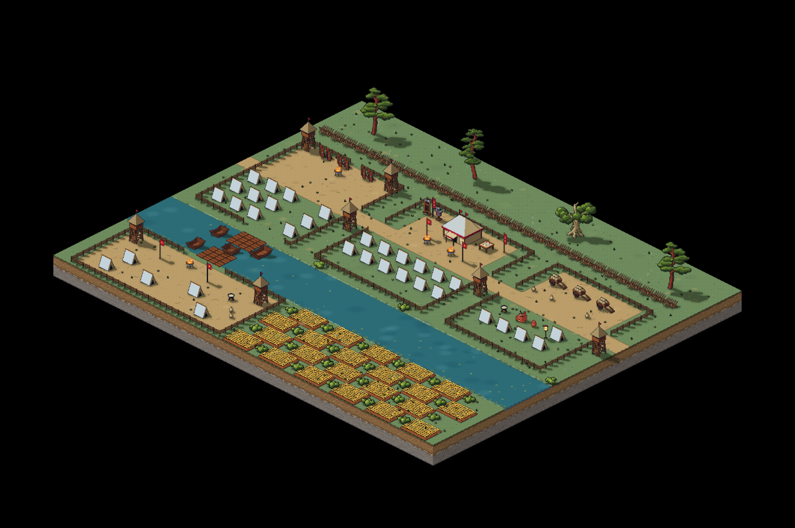

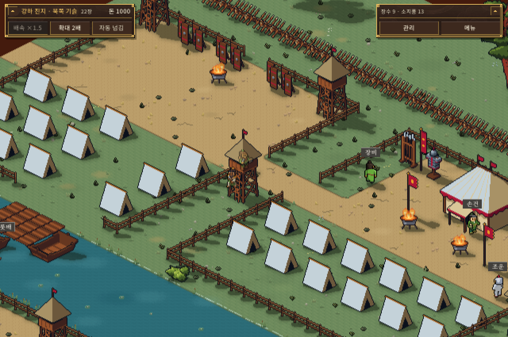

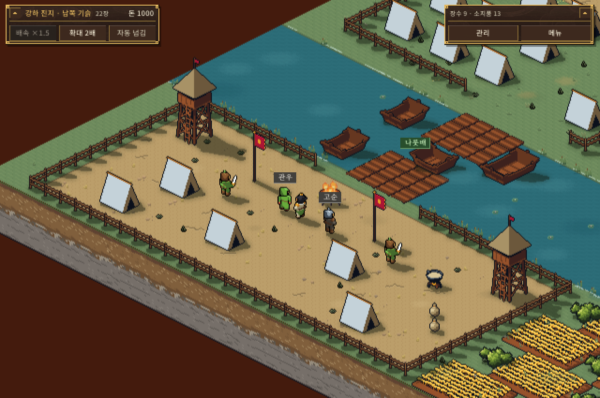
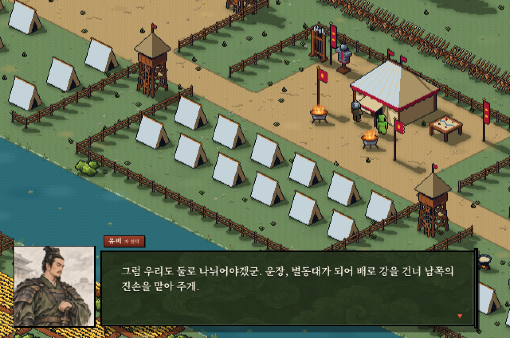
16-2. 강하 진지 수정 반영
- 밭·덤불 제거, 곡식 자루 2→1개. 강 폭 8→36칸(맵 64×80), 나루 간 거리 약 31칸이라 데스크톱·폰 줌 1~2 어느 시야에서도 맞은편이 화면 밖(계산 확인).
- 양쪽 나루터 곁 배가 각각 "나룻배" 출구. 북→남, 남→북 모두 실제로 건너 확인. 중간 배·다리 모양 제거.
- 줌 1 캡처는 못 찍고 계산으로만 확인. 폰 크기 캡처는 북쪽 나루·남쪽 기슭 두 장만.
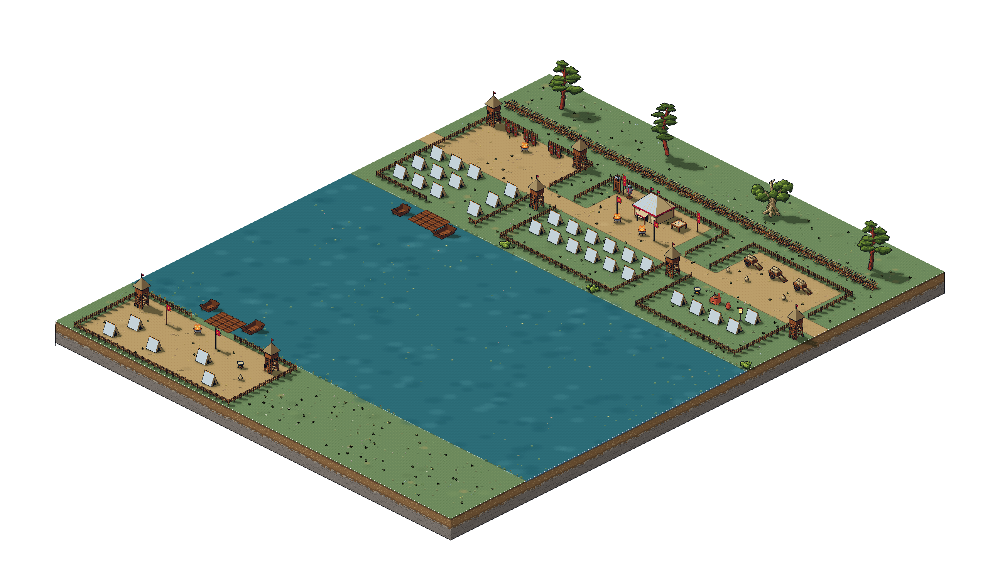

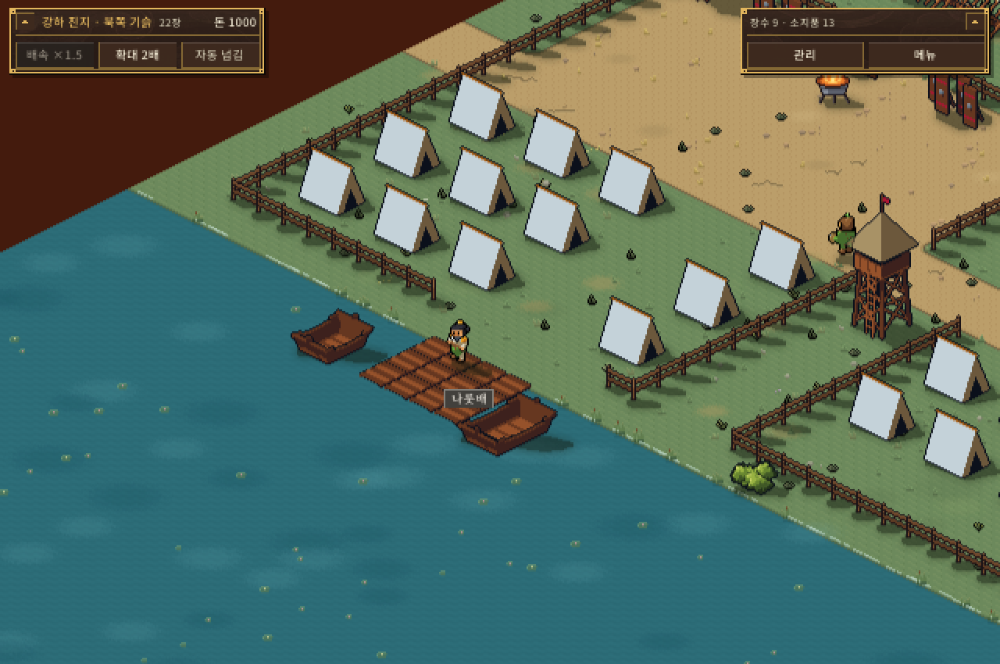

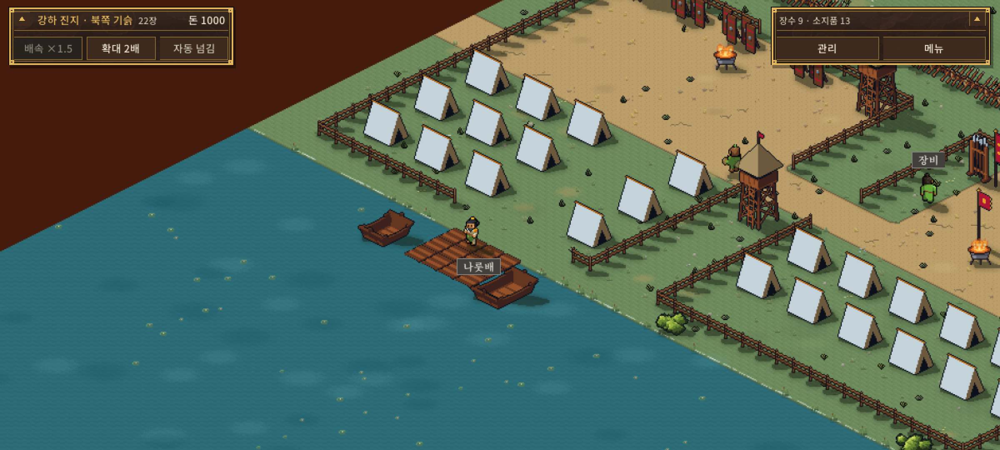

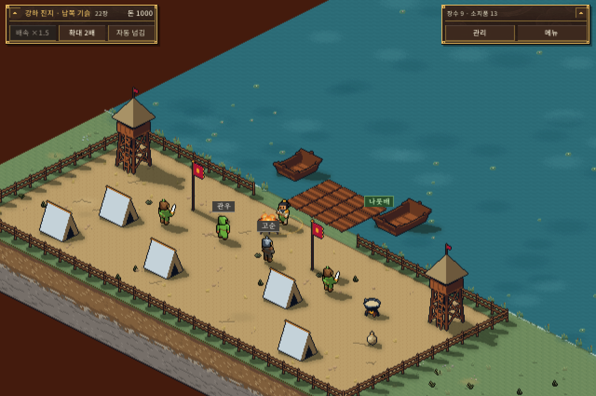

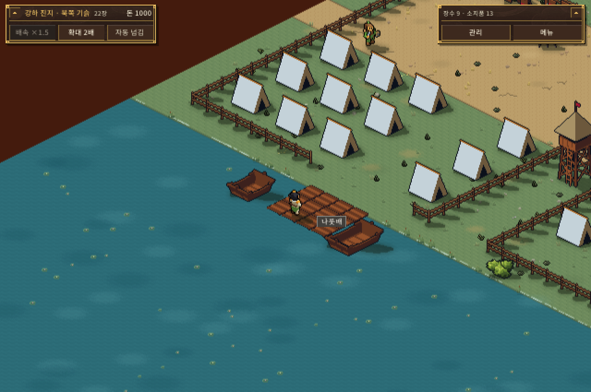
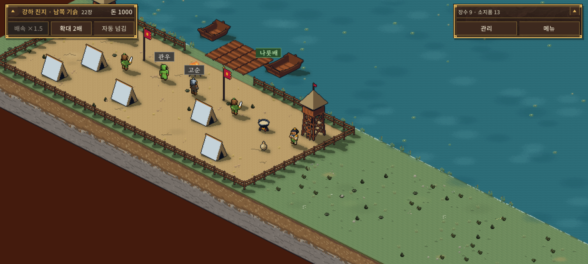
검증과 주의
- core 전체, gui(Scene·Explore·Shop·Range·SkillRange·Split·GlyphLayout 묶음), scenemap, duel 통과. content·Officer/Campaign 계열 통과. gui 전체와
go vet·전체 스위트는 돌리지 않았습니다(8GiB 맥). - 실패하는 테스트:
TestGlyphAtlasCoversScreenText(에셋 없음, 4번 참조). - 캡처 전용 임시 데모
internal/gui/uidemo_zz_batch.go가 남아 있습니다(필요 없으면 지움). 프로젝트 루트의 빈ver5/go파일은 이번 작업이 만든 것이 아닙니다. - 다른 세션 변경과 같은 파일(ch22.json 등)을 함께 고쳤고 stash·커밋은 하지 않았습니다.